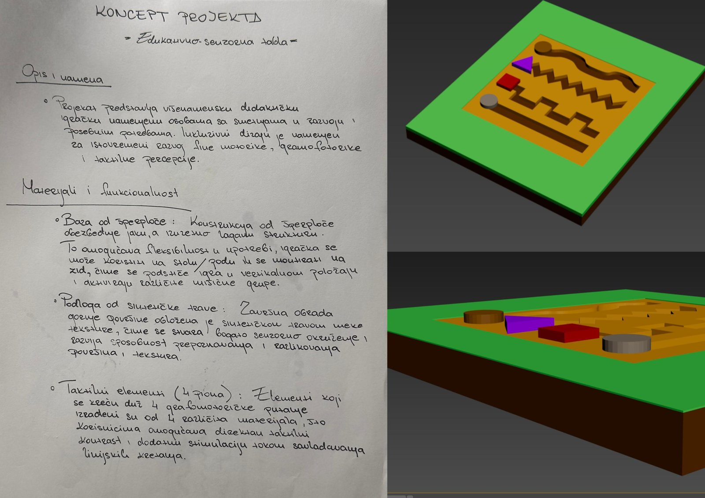
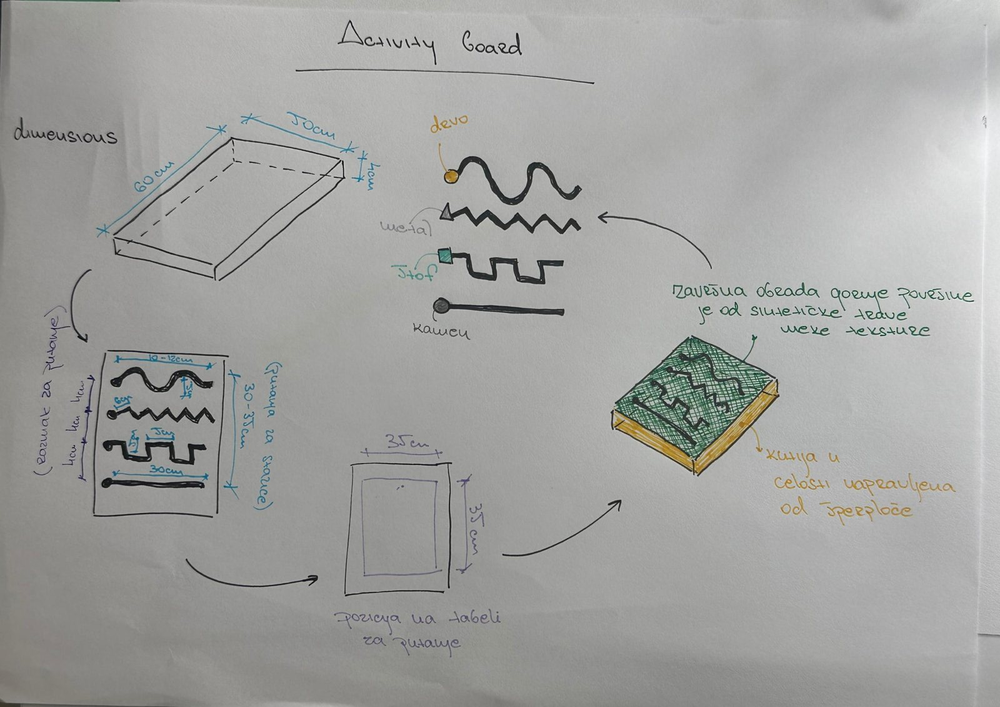
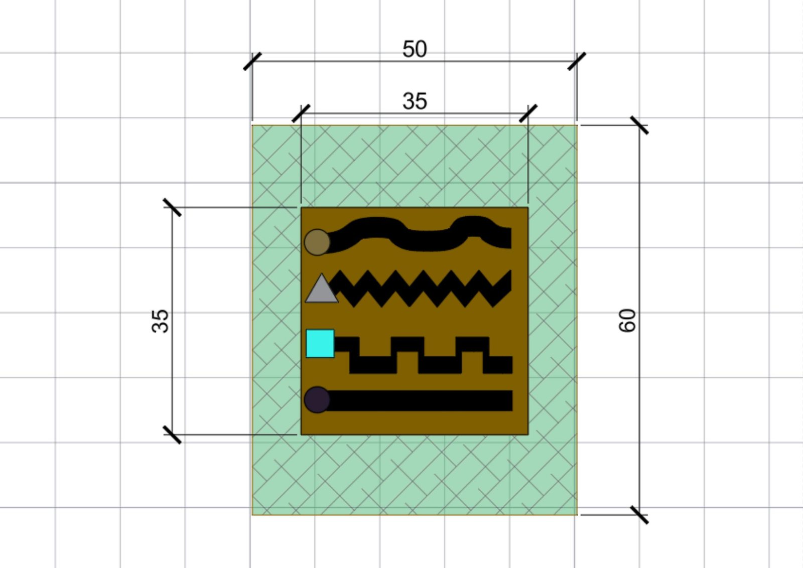
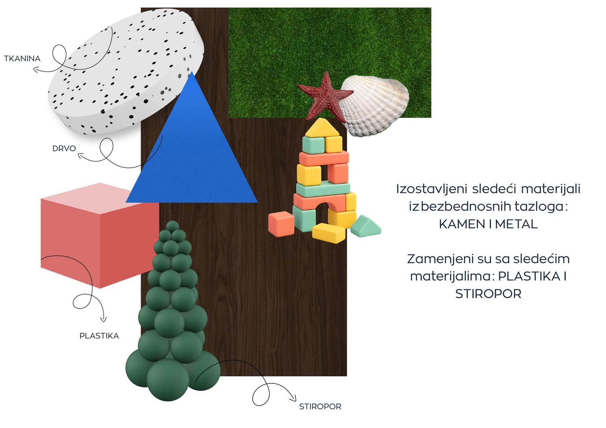

Radovi i primeri / Čas 8 / Prototip igračke
Edukativno-senzorna tabla
Sara Pištinjat48/24
Dosije: Prototip igračke
Čas 8
5 prikaza rada · Gradivo časa









Ista ruka, ostale nedelje
- Drugi život jeansa Reciklaža tekstilanedelja 8 · 2 slike · drugi dosije ovog časa